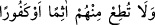
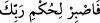
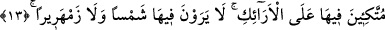
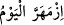

sûrelerden olduğunu söylemişlerdir.
Molla Fenâri, Fatiha sûresi tefsirinde büyük âlimlerden naklen İnsan sûresinin
Medine’de inen sûrelerden olduğunu nakleder. Aynı kanâati Mücâhid ve Katâde de
paylaşırlar. Onlara göre bu sûrede sâdece “
/Onlardan hiçbir
günahkâra veya nanköre itâat etme” (el-İnsan, 76/24) âyet-i kerîmesi Mekke’de
inmiştir. Nitekim Hasan Basrî ve İkrime de aynı kanâati ileri sürmüşlerdir. el-
Maverdi’ye göre bu sûre Medine’de inmiştir. Ancak “__WORD__ diye başlayan
yirmi dördüncü âyet bundan müstesnâdır çünkü bu âyet Mekke’de inmiştir. Bu sûrenin
Medine’de inen sûrelerden olduğuna içinde yer alan “esir” kelimesi de delâlet
etmektedir. Çünkü esir kavramı, Medine döneminde savaşı emreden ve cihada izin
veren âyetlerden sonra ortaya çıkmıştır. Şu hâlde bu sûrede Mekke’de inen âyetler
Medine’de inen âyetlerle birbirine eklenmiştir. Bir başka ifâdeyle bu sûre Mekke’de
inmiştir; ancak içindeki Medine’de inen âyetler Mekke’de inen âyetlerden daha fazladır,
diyebiliriz. Ağır basan görüşe göre bu sûreye Mekke değil, Medine’de inen sûre demek
daha doğrudur. Dolayısıyla biz yukarda aktardığımız kıssanın doğruluğundan şüphe
duymamaktayız. Gerçeği en iyi bilen ise ancak Allah’tır.
13. Orada koltuklara kurulmuş olarak bulunurlar; ne yakıcı sıcak görülür orada,
ne de dondurucu soğuk.
“Orada” cennette “koltuklara kurulmuş olarak bulunurlar.” Görüldüğü üzere Allah
mükâfâtlandırmayı, “koltuklara kurulmuş olma” şeklinde kayıtlamaktadır. Bu sebebsiz
değildir. Çünkü insanın en rahat olduğu hâl -âyette ifâde edildiği gibi- bu hâldir.
Dolayısıyla koltuklara kurulmuş olma hâlinin dışındaki hâller mükâfâta dâhil olmazlar.
Âyetteki “koltuklar” şeklinde tercüme edilen “el-erâik” kelimesi, gelin odasına konulan
sedirler demektir. Cennetteki koltuklar ise inciden ve yakuttandırlar. Bunlar altın, gümüş
ve çeşit çeşit mücevherlerden yapılmış ipliklerle dokunmuştur.
“Orada” dünyada olduğu gibi “ne yakıcı sıcak” harâret ve “ne de dondurucu soğuk
görülür.” Çünkü Arabistan arazisinde gâlip olan harârettir. Soğukluk ise Bizans ve
Acem topraklarındadır. Bu âyet-i kerîmenin mânâsı; onlar cennette ne zarar verici sıcak
ve ne de insana eziyet veren soğuk bir iklim içerisinde yaşamazlar. Buna göre âyetteki
“görmezler...” diye başlayan cümle, yukarda işâret ettiğimiz cennet ikliminin kinâye
yoluyla anlatımıdır. Âyetteki “zemherîr” kelimesi, şiddetli soğuk anlamındadır.
Kelimenin yapısındaki bu şiddet mânâsından dolayı Arapça’da “__WORD__ dendiğinde
“bugün çok şiddetli soğuk oldu” denmiş olmaktadır.
Peygamber Efendimiz (s.a.) şöyle buyurur: “Cennetin havası mutedildir. Orada ne